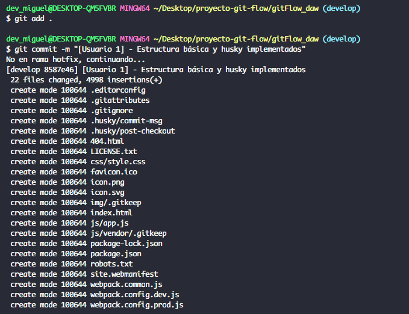

Documentación de la práctica

Desarrollado por: Miguel Vidal Bellido
Enunciado
Un cliente encargado de realizar formaciones a empresas ha decidido crear un curso nuevo para poder enseñar javascript aplicado a interacciones con elementos HTML. Para ello, nos ha pedido que implementemos una pequeña página web en la que mostremos algunos ejemplos en los que se utilice este lenguaje de programación. Su idea es que el producto final tenga un aspecto similar al siguiente esquema:
Nuestro equipo de programadores está compuesto por 3 personas. Por este motivo, hemos decidido dividir el trabajo de la siguiente forma:
El usuario 1 que es el más experimentado, se encargará de crear el repositorio del proyecto e implementará la estructura inicial de la página en la que incluirá la cabecera, la barra de navegación con el acceso a Home y el footer de la página. En la parte central del home incluirá una breve descripción del curso.
El usuario 2 creará la sección de “Modificar contenido HTML” en el que incluirá algún ejemplo similar al que existe en el siguiente enlace así como una explicación de dicho código. También desarrollará la sección “Modificar atributos HTML”
El usuario 3 que acaba de llegar a la empresa implementará la sección “Modificar estilos CSS” de la misma forma que ha hecho el usuario 2. Añadirá ejemplos similares a este (comentando el código).
Además, debido a la complejidad del proyecto, se ha decidido seguir la metodología Git Flow para poder realizar el desarrollo.
Así pues, nuestra tarea consistirá en crear un repositorio en GitHub en el que simulemos toda la implementación acordada además de documentar todo el proceso correctamente para que nuestro cliente vea que somos una empresa seria y trabajamos siguiendo una metodología (esto incluye mensajes de commit siguiendo las buenas prácticas vistas en clase). Esta documentación, deberá estar incluida en el GitHub Pages del propio repositorio del proyecto y deberá contener:
Una introducción teórica de qué es Git, la metodología Git Flow y por qué la utilizamos en nuestro desarrollo. (0,75 puntos)
Git es un sistema de control de versiones distribuido utilizado en el desarrollo de software. Fue creado el año 2005 por Linus Torvalds y se ha convertido en una herramienta fundamental para los desarrolladores de software ya que permite mantener un seguimiento de los cambios realizados en el código, permite colaborar entre equipos y sobre todo tener una gestión de versiones y ramificaciones, entre muchas otras funcionalidades.
La metodología Git Flow ofrece un enfoque de organización y flujo de trabajo basado en la gestión de ramas específicas para diferentes fases del desarrollo. Se basa en el uso de las siguientes ramas específicas para cada propósito:
- Rama Master → Contiene el código que ha sido probado y es estable, siempre que se complete una funcionalidad o se soluciona un error se fusiona en esta rama.
- Rama Develop → Es la rama principal del desarrollo. Contiene el código en desarrollo y se derivará en la rama master.
- Features Branchs → Cuando se implementa una nueva funcionalidad se desarrolla en una rama separada, derivada de la rama de desarrollo. Cuando se complete el desarrollo de la funcionalidad, se fusiona con la rama de desarrollo.
- Release Branches → Se crean cuando se planea una nueva versión para producción. La finalidad de estas ramas es preparar el código para el lanzamiento. Se realizan pruebas finales y correcciones en esta rama antes de ser fusionada con la rama master.
- Hotfix Branches → Se utilizan para corregir ciertos problemas críticos en producción. Se derivan a partir de la rama master y cuando el error es solucionado se fusiona de nuevo en la rama master y develop.
Se utiliza esta metodología en el desarrollo por varias razones:
- Organización clara → Ofrece una estructura clara para el desarrollo, ya que separa las fases del proceso y facilita la colaboración entre equipos.
- Seguimiento de cambios → Permite realizar un seguimiento eficiente de las modificaciones que se llevan a cabo en el código, lo que facilita la identificación de errores y la reversión a versiones anteriores si fuera necesario.
- Gestión de versiones → Facilita la gestión de versiones estables para producción, además de facilitar la implementación de nuevas características de manera controlada y ordenada.
- Facilita la colaboración → Permite que varios desarrolladores trabajen implementando características diferentes de forma simultánea, manteniendo un flujo de trabajo estructurado y evitando conflictos en el código base.
USUARIO 1
El usuario 1 que es el más experimentado, se encargará de crear el repositorio del proyecto, adecuará este para poder utilizar la metodología git flow (creación de ramas iniciales), e implementará la estructura inicial del proyecto utilizando el siguiente boilerplate (link). Esta página inicial incluirá la cabecera, la barra de navegación con el acceso a Home y el footer de la página.
En la esquina superior derecha realizamos clic en el botón New.
En la página "Create a new repository", introducimos gitFlow_daw. Decidimos si el repositorio será público o privado. En nuestro caso público.
Finalmente, hacemos clic en el botón Create repository. Con esto, nuestro repositorio gitFlow_daw estará creado y listo para ser utilizado.
Clonamos el repositorio.
Utilizamos el comando git clone [URL del repo]. Podemos observar como nos avisa de que hay un warning, debido a que no encuentra archivos dentro del repositorio.
Instalación de Git Flow
En nuestra terminal comprobamos si Git Flow está instalado con el comando git flow versión. Si no lo tenemos instalado, lo instalamos con el siguiente comando sudo apt install git-flow.
Inicialización de Git Flow
Ejecutamos el comando git flow init y creamos las ramas que sean necesarias para nuestro proyecto, es recomendable crearlas todas.
Crear la estructura inicial del proyecto utilizando boilerplate.
Accedemos al link del enunciado y seleccionamos el enlace del Readme Template, realizamos clic y seleccionamos clic sobre la opción de copiar la URL del repositorio.
Clonamos el repositorio anterior en un directorio fuera de donde tenemos clonado nuestro repositorio. Para ello utilizamos el comando git clone [URL del repo].
Una vez tenemos clonado el repositorio, vamos a añadir los datos a nuestro proyecto. Para ello nos situamos en la raiz y ejecutamos el comando cp -a /repo_copiado/. /nuestro_repo/ . Indicamos el asterisco para evitar que se copien los archivos ocultos.
Comprobamos que la operación de copiar archivos se ha realizado correctamente con el comando ls -la .
Modificamos el archivo index.html y style.css, en ellos añadimos el codigo html y css correspondiente.
Ejecutamos el comando npm i para instalar las dependencias.
Seguidamente ejecutamos el comando npm run start para comprobar el resultado de nuestro código añadido
Comprobamos el resultado.
Además, el usuario 1 que quiere que todo funcione correctamente, creará dos hooks (utilizando la librería husky) para el proyecto y que harán lo siguiente:
Preparación del entorno para configurar husky.
Instalamos husky en nuestro proyecto, con el comando npm install husky–save-dev.
Una vez que Husky esté instalado, debemos ejecutar el script prepare en nuestro archivo package.json. Este script instalará Husky y creará un directorio llamado .husky en tu proyecto
Comprobamos que se ha creado un nuevo directorio llamado .husky en la raiz de nuestro proyecto
El primero comprobará que siempre que se realice un commit en la rama hotfix exista una persona asignada para verificar que no se rompe nada. Para ello, deberá comprobar que el mensaje de commit contiene la frase “A corregir por: …” (0,75 puntos)
Accedemos al directorio ./husky, y creamos un archivo commit-msg.
Este debe ser el resultado.
Le otorgamos permiso de ejecución.

Accedemos al archivo y añadimos el siguiente código al archivo para que se dispare siempre que detecte que se está intentando realizar un commit en la rama hotfix.
El segundo simplemente mostrará en consola un mensaje con un dibujo hecho con caracteres ascii una vez hagamos el checkout de una rama del proyecto. Podéis coger ejemplos de esta página. (0,5 puntos)
Creamos el archivo post-checkout dentro del directorio .husky .
Le otorgamos permisos al archivo.
Añadimos el siguiente código al archivo.
Una vez finalizado todo el proceso, el usuario 1 realiza un commit a la rama develop. Para ello ejecutamos el comando git add . , git commit -m “[Usuario 1 - msg]” y finalmente ejecuta la instrucción git push origin develop para subir los cambios al repositorio remoto.
Comprobamos que se ha realizado de forma exitosa en Github.
USUARIO 2
El usuario 2 *, crea dos features (feature/contenidoHTML y feature/atributosHTML, una por cada sección que debe implementar). Además, añadirá el siguiente hook (1 punto):
Creación de Ramas de Features e implementación del código necesario.
Accedemos a la terminal y ejecutamos el comando git checkout -b feature/contenidoHTML.
Modificamos el archivo index.html e implementamos el código necesario, este es el resultado.
Accedemos a la terminal y ejecutamos el comando git checkout -b feature/atributosHTML.
Modificamos el archivo index.html e implementamos el código necesario, este es el resultado
Previo a realizar el commit, se verificará el correcto formato en los ficheros html. Para ello, se ejecutará el linter eslint utilizando el siguiente plugin (link) (0,5 puntos).
Instalamos eslint-plugin-html, para ello ejecutamos el siguiente comando:
Creamos el archivo de configuración en la raiz de nuestro directorio, ha de llamarse .eslintrc.json .
Ejecutamos el comando npm init @eslint/config, para crear el fichero de configuración.

Accedemos a nuestro package.json y añadimos un script para ejecutar ESLint en nuestros archivos html.
Añadimos el hook de pre-commit con el siguiente comando npx husky add .husky/pre-commit "npm run lint":
Se nos creará el archivo dentro de .husky con la siguiente información.
Realizamos dos commits uno por cada rama.
Primeramente la rama Feature/AtributosHtml, comprobamos que se ha ejecutado eslint correctamente.
Finalmente realizamos el mismo proceso en la rama Feature/atributosHtml.
Comprobamos en el servidor que se han realizado de forma exitosa.
Realizamos el merge con la rama develop.
Accedemos a nuestro github y creamos dos pull request (una para cada rama feature) para unificar los cambios realizados por el usuario 2.
Comprobamos que todo ha salido bien.
USUARIO 3
El usuario 3 *, crea una feature (feature/estilosCSS) asociada al cambio para añadir su sección. El usuario 3, además, crea una nueva release con todas las features que etiqueta como v1.0. (2 puntos)
Cambiamos a la rama develop y ejecutamos el comando git pull origin develop para obtener las últimas modificaciones del proyecto.
Creamos la nueva rama de características llamada feature/estilosCSS con el comando git checkout -b.
Accedemos al archivo css/styles.css y añadimos el código que deseamos, en nuestro caso el código css añadido le da estilos a los botones. Este es el resultado.
Creamos un commit con los nuevos cambios y realizamos el push al repositorio remoto en Github.
Cambiamos a la rama develop, git checkout develop.
Comenzamos el proceso de release con Git Flow, lo que creará una rama de release a partir de develop:
Comprobamos que la rama develop esta actualizada y obtenemos los cambios que se han realizado en la rama feature/estilosCSS.
Realizamos un commit de los cambios.
Finalmente terminamos la release git flow release finish 'v1.0' .
Añadimos un mensaje.
Subimos los cambios

USUARIO 1 FINAL
El usuario 1 * que se encarga de las pruebas, decide mejorar un poco la sección del contenido creada por el usuario 2. Para ello, crea un hotfix (hotfix/mejorasV_1_0) que efectúa dicha mejora. (1,5 puntos)
Como el usuario 3 también tenía fallos se va a mejorar las secciones tanto del usuario 2 como del 3.
Para ello nos situamos en la rama develop desde nuestra terminal. Una vez alli ejecutamos el comando git flow hotfix finish mejorasV_1_0.
Modificamos los archivos html y css necesarios y ejecutamos el comando git add . para añadir los cambios y realizamos el commit con la estructura correcta.
Utilizamos Git Flow para cerrar los cambios y ejecutamos el comando git flow hotfix finish mejorasV_1_0.
Añadimos un comentario del proceso que se ha realizado.
Finalmente subimos los cambios a master, develop y subimos los tags al servidor remoto.
Accedemos a nuestro repositorio remoto en Github y comprobamos que se ha realizado de forma correcta.